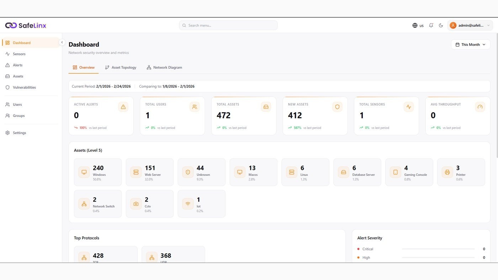
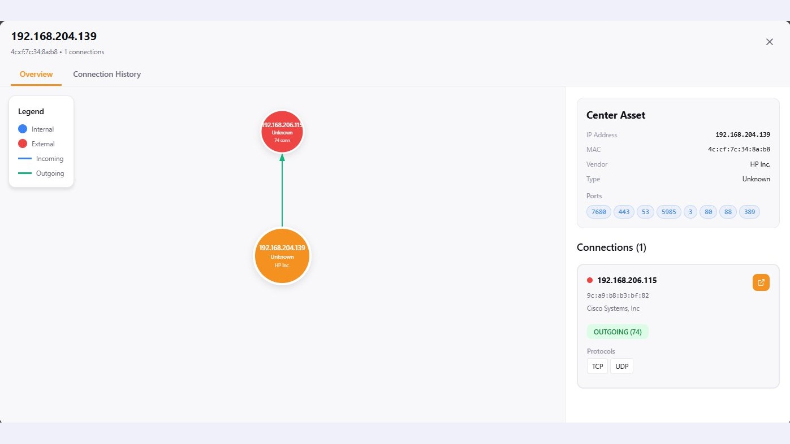
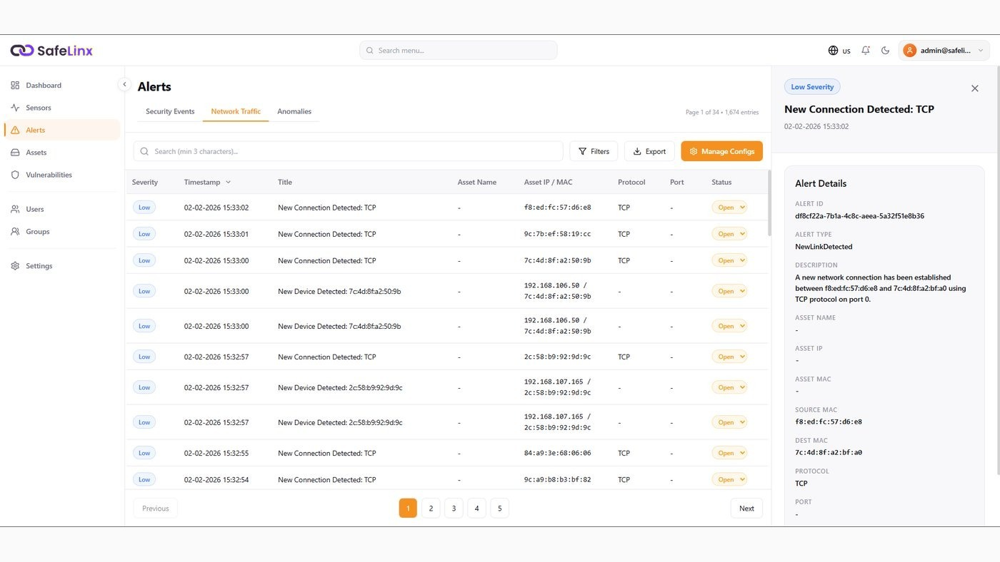
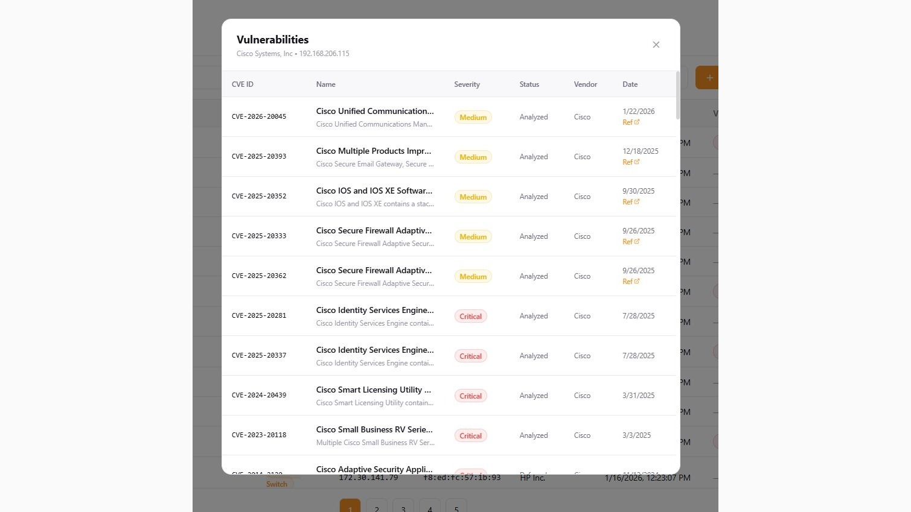
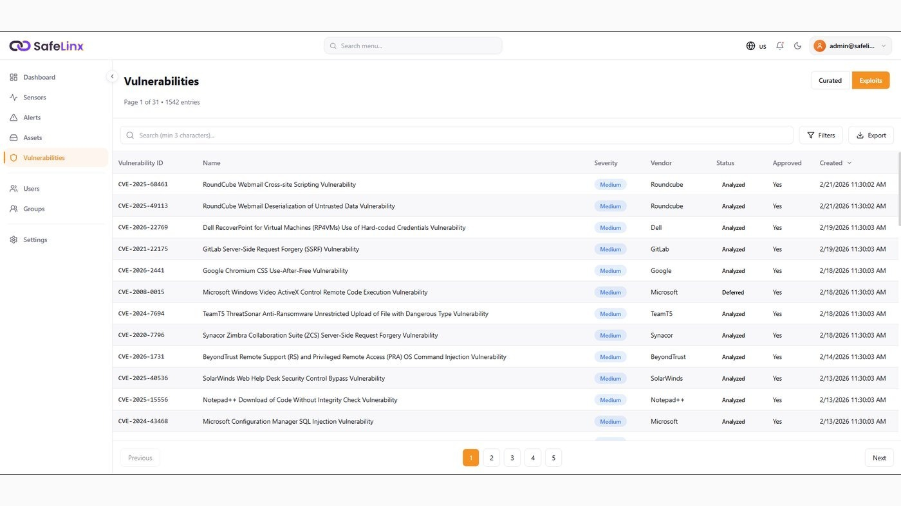
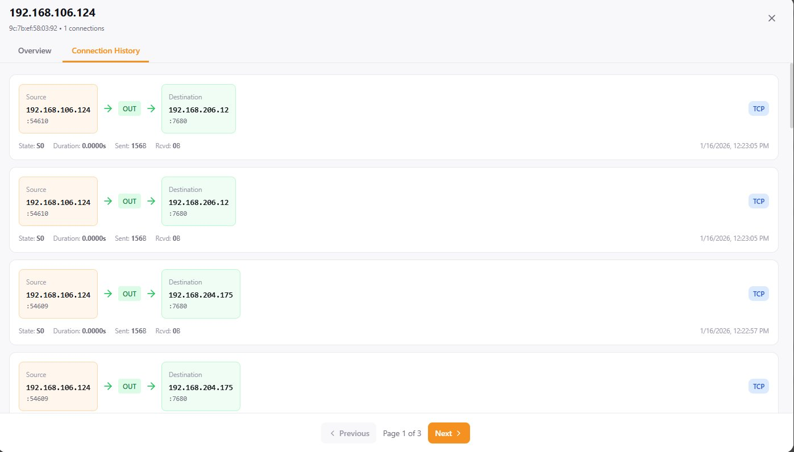

Securing the invisible layer of your infrastructure.
SafeLinx protects IoT and OT networks by eliminating hidden vulnerabilities and ensuring resilient, trusted connections — giving industrial and connected-device environments the visibility they were never designed to have.
Purpose-built for IoT and OT — not retrofitted from IT.
SafeLinx is a next-generation IoT/OT security platform designed to safeguard critical infrastructure, industrial control systems, and connected devices. Built for simplicity, scalability, and resilience, it gives organizations full visibility into environments that traditional IT security tools were never built to see — detecting threats in real time and keeping operations running without interruption.
Comprehensive asset visibility
Auto-discovers every connected IoT and OT asset, classifies it, and maps how it communicates across the network.
Advanced threat detection
Behavioral analytics, signature-based detection, and anomaly monitoring surface both known and unknown threats.
Continuous monitoring
Real-time traffic analysis across industrial protocols including Modbus, DNP3, BACnet, and OPC.
Incident response integration
Connects seamlessly with SIEM, SOAR, and SOC workflows for faster containment and remediation.
Compliance & reporting
Automated compliance mapping against NIST, IEC 62443, ISO 27001, and regional regulations.
From discovery to remediation, in one workflow.
Unified IoT Security Dashboard
A centralized, single-pane-of-glass view of your entire IoT and OT ecosystem. SafeLinx continuously discovers new assets the moment they appear on the network and automatically classifies them by type, vendor, and role — eliminating blind spots so teams always know exactly what's active and how it interacts.

01 — DashboardDeep Asset Intelligence
Goes beyond simple discovery with in-depth intelligence on every connected device. Security teams can drill into a complete asset profile — IP, properties, hardware components, software and firmware versions, associated users, and connected nodes — for a holistic view of each device's identity and role.

02 — AssetsCentralized Alert Management
Brings every alert from across your IoT and OT environment into one correlated, organized view. Analysts filter by site, severity, status, protocol, or affected asset so the most critical issues surface first — and every alert expands into full context: device information, traffic patterns, and vulnerability data.

03 — AlertsIntelligent Alert Drill-Down
Every alert expands to reveal its name, triggering reason, matched protocols, involved assets, and even the physical or logical location of the device — giving analysts the transparency to understand the scope and impact of an event immediately.

04 — Drill-downComprehensive Vulnerability Management
Consolidates every known vulnerability across IoT and OT assets into a single, centralized view — from high-level dashboards down to device-level detail — so teams understand real exposure and can act on it.

05 — VulnerabilitiesIoT-Focused Threat Intelligence
Threat intelligence purpose-built for IoT and OT — not repurposed IT feeds. Every asset, alert, and vulnerability is automatically enriched with context on known exploits, vendor-specific CVEs, and real-world attack data.

06 — Threat Intel